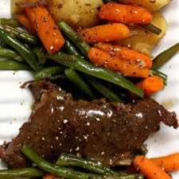

Instant Pot Grandma's Sunday Roast
Main DishBeef
Servings6-8 servings
PrepPT15M
CookPT1H5M

Ingredients
- 2-3 pounds chuck steak or chuck roast, trimmed of excess fat
- 1 tsp kosher salt
- 1 tsp onion powder
- 1 tsp garlic powder
- 1 tsp crushed rosemary
- 1/2 tsp smoked paprika
- 1 Tbsp canola or olive oil
- 3 cups beef broth or 3 cups water and 3 tsp Better than Bouillon beef base
- 2 pounds yellow or red potatoes
- 1 pound baby carrots
- 1 pound green beans
- 2 Tbsp worcestershire sauce
- 2 Tbsp cornstarch + 2 Tbsp cold water
Directions
- (kosher salt, onion powder, garlic powder, rosemary and paprika) onto the beef. Rub the seasonings into all sides of the beef.
- When it says HOT on the display add in the oil. Swirl the pot around to coat the bottom of the pot with the oil. Place the beef into the pot and let it sit for 3 minutes. Then use tongs to flip it to the other side and let it sit and brown for 3 more minutes.
- to one side of the pot and deglaze the pot with the beef broth.
- and secure the lid. Set the valve to sealing. Set the manual/pressure cook button 30 minutes for beef chuck steak or 60 minutes for beef chuck roast.
- . Wash and cut your potatoes into large chunks. Wash the green beans and trim off the ends.
- Once you can, open the pot and add in the vegetables on top of the beef. Drizzle the worcestershire sauce over the top. Cover the pot and set the manual/pressure cook button to 5 minutes (for softer vegetables) or 4 minutes (for firmer vegetables). Make sure valve is set to sealing. When the timer beeps let the pot sit there until the pressure naturally releases completely or if you’re in a time bind you can release the pressure after 10 minutes.
- and scoop the vegetables and meat onto a platter. Loosely tent with foil.
- Turn the Instant Pot to the saute function. In a small bowl stir together the water and the cornstarch until smooth. Stir the mixture into the liquid in the Instant Pot. Whisk the mixture until it thickens. Depending on how thick you like your gravy you could add in more cornstarch/water slurry. Salt and pepper the gravy to taste.
- meat and vegetables that are on the platter with the gravy. Salt and pepper to taste.
Source
https://www.365daysofcrockpot.com/instant-pot-grandmas-sunday-roast/
This page includes Schema.org Recipe structured data for recipe importers.